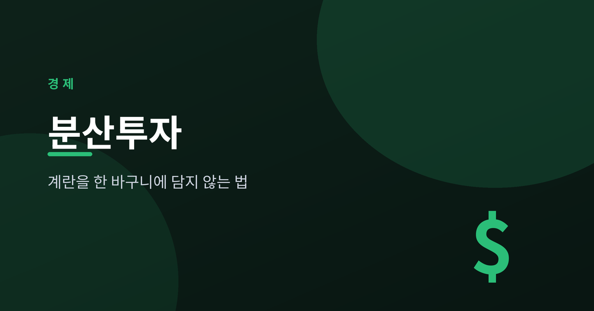
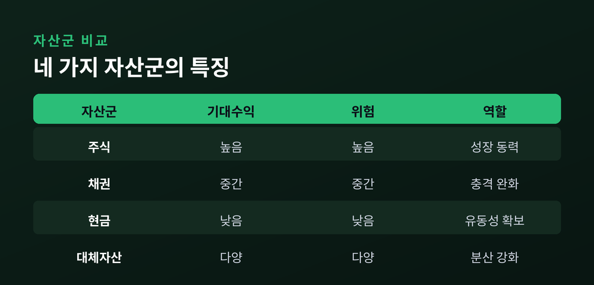
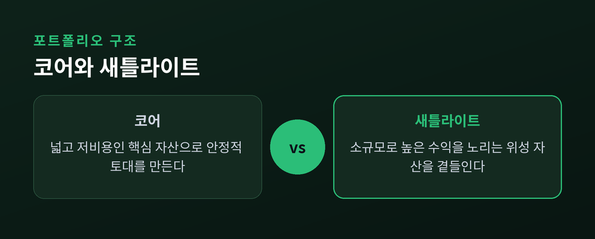
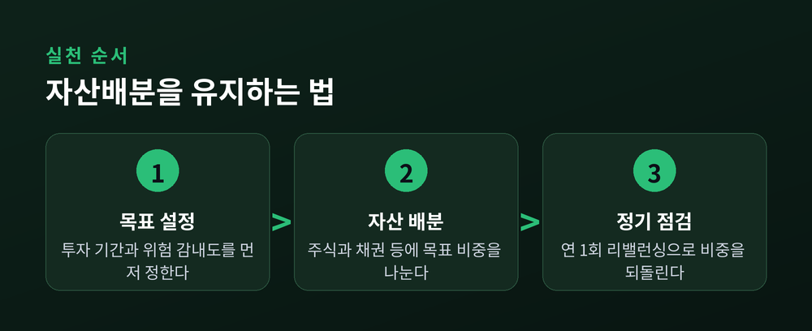

계란을 한 바구니에 담지 않는 법

이번 글에서는 분산투자와 자산배분의 기초를 정리해 보겠습니다.
"계란을 한 바구니에 담지 말라"는 오래된 조언이 왜 여전히 유효한지, 그리고 그 원리를 어떻게 실제 투자에 옮길 수 있는지 차분히 살펴보려 합니다.
먼저 한 가지 말씀드립니다. 이 글은 투자 권유가 아니며, 투자 판단과 그 책임은 본인에게 있습니다. 특정 상품을 추천하지 않고, 공개된 자료로 확인된 기초 개념만 다룹니다.
자산배분은 주식, 채권, 현금 같은 서로 다른 자산군에 돈을 어떻게 나눌지 정하는 일입니다.
분산투자는 그 자산군 사이에서, 또 자산군 안에서 투자를 고르게 펼치는 일입니다.
두 개념의 목표는 하나입니다.
자신의 투자 기간과 위험 감내도에 맞춰, 위험은 줄이면서 기대수익을 지키는 조합을 찾는 것입니다.
핵심은 상관관계에 있습니다. 자산들이 서로 같은 방향으로만 움직이지 않는다면, 한쪽이 흔들려도 다른 쪽이 버텨줍니다.
반드시 반대로 움직일 필요는 없습니다. 완벽하게 함께 움직이지만 않으면 분산의 효과는 생깁니다.
주식과 채권이 자주 인용되는 이유가 여기에 있습니다.
둘은 서로 다른 방향으로 움직일 때가 많아, 하락장에서 채권이 주식 손실을 일부 덜어주기도 합니다.
다만 이 관계가 언제나 유지되는 것은 아닙니다.
상관관계는 경기, 정책, 세계 정세에 따라 조용히 변합니다. 그래서 분산은 한 번 짜두고 잊는 것이 아니라 꾸준히 살펴야 하는 일입니다.
부동산이나 금 같은 대체자산을 소폭 곁들이는 것도, 주식과 다른 결로 움직이는 자산을 하나 더 두려는 시도입니다.

가장 널리 알려진 형태는 주식 60%, 채권 40%로 나누는 60/40 포트폴리오입니다.
전량 주식이 주는 급등락 없이 성장을 추구하려는 이들의 오랜 기본형이었습니다.
역사적으로 연 7~8% 안팎의 수익을 내면서, 주식만 담았을 때보다 변동성을 약 3분의 1 낮춰온 것으로 알려져 있습니다.
또 다른 틀은 코어-새틀라이트입니다.
넓고 저비용인 핵심 자산을 중심에 두고, 더 높은 수익을 노리는 작은 위성 자산을 곁들이는 방식입니다.
목표와 위험 감내도에 따라 보수적인 80/20부터 성장 지향의 60/40까지 폭이 넓습니다.
어느 쪽이 정답이라고 말하기는 어렵습니다.
30대와 60대가 견딜 수 있는 흔들림의 크기는 다르고, 같은 사람도 목표에 따라 답이 달라지기 때문입니다.
중요한 것은 화려한 조합이 아니라, 내가 밤에 편히 잘 수 있는 비중을 찾는 일이라고 생각합니다.

배분은 한 번 정하고 끝나지 않습니다.
시간이 지나면 오른 자산의 비중이 커지고, 위험도 조용히 늘어납니다.
그래서 오른 자산은 덜어내고 뒤처진 자산은 채워, 목표 비중으로 되돌리는 리밸런싱이 필요합니다.
보통 1년에 한 번 정도 점검하는 방식이 흔히 권해집니다.
여기에 정기적립을 더할 수 있습니다.
정해진 금액을 일정한 간격으로 꾸준히 넣으면, 값이 쌀 때 더 많이, 비쌀 때 더 적게 사게 됩니다.
다만 한 연구는 목돈을 한 번에 넣는 편이 약 3분의 2 확률로 더 나았다고 봅니다.
정기적립의 진짜 힘은 수익 극대화가 아니라, 흔들리는 시장에서 규율을 지켜주는 데 있는 셈입니다.

정리하면 이렇습니다.
분산투자는 미래를 맞히는 기술이 아니라, 무엇을 놓쳐도 무너지지 않도록 준비하는 태도입니다.
"흔들리지 않으려는 것이 아니라, 흔들려도 넘어지지 않으려는 것."
바구니를 여럿 두는 사람은, 하나가 떨어져도 아침 식사를 거르지 않습니다.